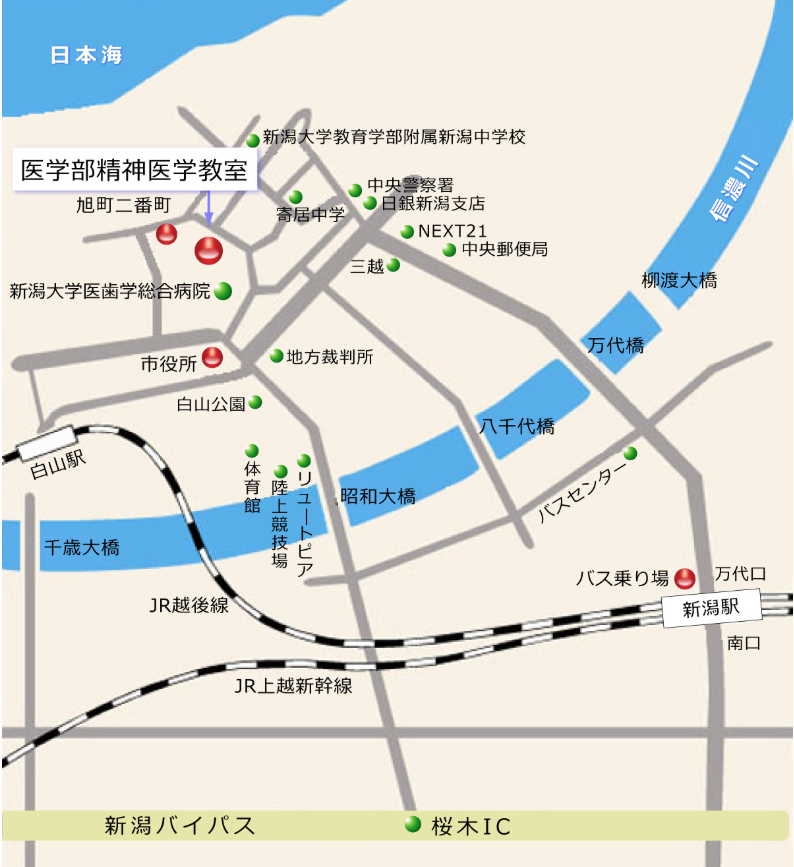

アクセス案内
アクセスマップ
キャンパスマップ
"東京から新潟駅まで
上越新幹線 東京駅 → 新潟駅 約2時間
新潟駅から医学部医学科までのバス経路
＜バス経路1＞
- 新潟駅万代口下車
- バスターミナルからC8系統 新大病院線
- 「新潟大学病院」下車（所要15～20分）
＜バス経路2＞
- 万代口下車
- バスターミナルからC2系統 西部営業所行き または 県庁行き
- 「旭町通二番町」下車（15～20分）
＜タクシー＞
所要10～15分
新潟空港から医学部医学科までのバス経路
＜バス経路1＞
- 新潟駅南口までA11 新潟リムジンバス
- 南口バスターミナル → C2系統「旭町通二番町」下車（25分）
＜バス経路2＞
- 新潟空港 → 新潟駅万代口 → C2またはC8系統バス
- 「新潟大学病院」または「旭町通二番町」下車（25分）
＜タクシー＞
所要20～30分
教室の住所・連絡先
〒951-8510新潟県新潟市中央区旭町通一番町757 精神科教室
TEL: 025-227-2213